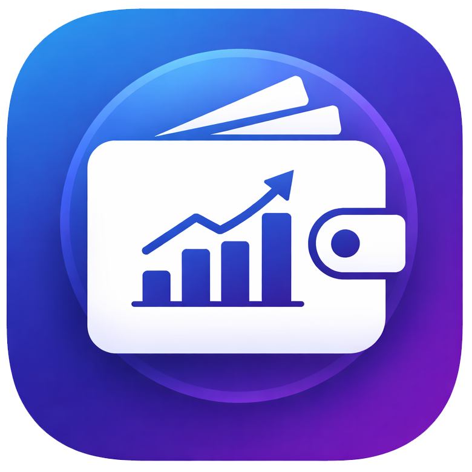

About Smart Expense Tracker
The Smart Expense Tracker app helps you manage your daily spending and track expenses easily. It allows users to monitor their income, expenses, and budgets to maintain better financial control.
Key Features
- Daily Expense Tracking: Record and monitor your daily spending quickly.
- Income Management: Track all sources of income in one place.
- Budget Planning: Set budgets and control your monthly expenses.
- Expense Categories: Organize expenses into categories for better analysis.
- Reports & Insights: View summaries and insights of your spending habits.
- User-Friendly Interface: Simple design that makes expense tracking easy.
Why Use Smart Expense Tracker?
This app helps you understand where your money goes. By tracking your income and expenses regularly, you can reduce unnecessary spending and build better financial habits.
How to Use the App
Add your income and expenses daily, categorize them properly, and review your spending reports. This will help you stay within your budget and manage your finances effectively.
Benefits
- Helps control unnecessary spending.
- Improves personal financial management.
- Easy tracking of income and expenses.
- Better budgeting and savings planning.
- Simple and clean interface for quick usage.
Download Smart Expense Tracker
Get the app for free on Android:
Download on Google Play
Back to Home